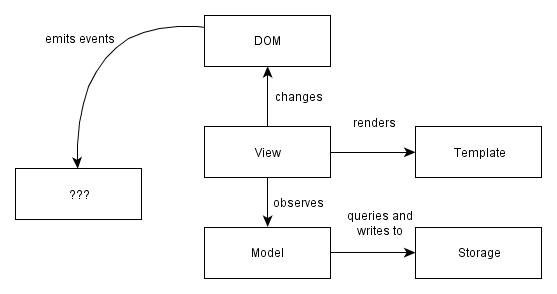

Single page apps in depth
1. Modern web applications: an overview
왜 우리는 single page app을 만들고 싶어할까? 주요 이유 중 하나는 SPA가 유저에게 네이티브 앱과 같은 경험을 주기 때문이다.
이러한 경험은 다른 접근들로는 구현하기 어렵다. 하나의 페이지에 풍부한 인터렉션을 가지고 있는 다양한 컴포넌트들을 지원한다는 것은 이 컴포넌트들이 많은 중간 state를 가진다는 것을 뜻한다(e.g. 메뉴 열기, x를 선택한 메뉴 아이템, y를 선택한 메뉴 아이템, 메뉴 아이템 클릭 등). 서버 사이드 렌더링은 모든 중간 상태를 적용시키기 어렵다. 뷰에서 일어나는 작은 상태변화들은 URL들과 맵핑되기 어렵다.
SPA는 UI의 일부분을 다시 그리기 위해 HTML을 다시 불러오기 위해 서버까지 갈 필요가 없다는 데에서 차별점을 가진다. 이 차별점은 데이터를 다루는 모델층(model layer)과 모델로부터 읽어들인 뷰 단(view layer)으로 데이터를 분리함으로써 가능하다.
대부분의 프로젝트들은 큰 포부와 당장 해결해야 하는 문제에 대한 불완전한 이해에서 시작한다. 성취가 종종 우리의 이해를 앞서기도 한다. 문제를 완전히 이해하지 않은 상태에서 코드를 쓸 수는 있다. 다만 그런 코드들은 충분치 못한 이해 때문에 필요보다 더 복잡해진다.
좋은 코드는 같은 문제를 여러 번 해결하거나 리팩토링 할 때 생겨난다. 대체로 이런 진척은 반복적으로 생겨나는 패턴을 알아차리고 그것을 일관적인 매커니즘으로 대체하는데서 일어난다. 같은 목표를 달성할 수 있는 보다 간단한 매커니즘을 보지 못했기 때문에 존재하는 “특정한 경우”에 쓰이는 코드들을 대체함으로써 말이다.
SPA에서 쓰이는 아키텍쳐들은 이러한 과정들의 결과를 보여주는 거라고 할 수 있다. jQuery를 쓸 때 항상 쓰는 것들을 표준화한 매커니즘의 이점을 지닌 코드를 쓰는 과정을 예로 들 수 있다.(e.g. UI 업데이트 등)
프로그래머들은 단순함 보다는 편한 것에 사로잡혀 있다. 혹은, 프로그래밍 경험이 아니라 프로그램의 결과물을 내는 것이 무엇인지에 사로잡혀 있다고도 할 수 있다. 이것은 세미콜론이 필요한지, 혹은 우리가 중괄호를 제거할 수 있는 전처리기를 사용하느냐 마냐에 대한 불필요한 대화들로 이어진다. 우리는 프로그래밍에 대해 여전히 ‘코드를 치는 일’이 가장 어려운 부분인 것처럼 이야기하고 있다. 어려운 부분은 그게 아니라 코드를 유지하는 부분이다.
지속가능한 코드를 만들기 위해, 우리는 간단해 질 필요가 있다. 이는 끊임없는 고군분투다. 무가치한 문제를 해결하기 위해 복잡성(스파게티 코드/종속성)을 더하는 것, 또 복잡성을 감소시키지 않는 방식으로 문제를 푸는 것은 쉬운 일이다. 네임스페이스가 바로 후자의 예시다.
이러한 것들을 생각하면서, 3가지 다른 관점으로 이루어진 모던 웹앱을 만들 수 있는 지 살펴보자.
- Architecture: 우리가 만들고자 하는 앱을 구성하는 (개념적인)부분은 무엇인가? 어떻게 서로 다른 부분들이 통신하는가? 그들은 어떻게 서로 의존하는가?
- Asset packaging: 앱 구조를 파일과 파일로 구성해 논리적인 모듈로 만드는 방법은 무엇인가? 이 모듈들은 어떻게 구축되고 브라우저에 로드되는가? 유닛 테스팅을 위해 모듈을 어떻게 로드할 수 있는가?
- Run-time state: 브라우저에 로드되면 앱의 어느 부분이 메모리에 있는가? state간 transigion을 수행하고 문제 해결을 위해 현재 상태를 파악하려면 어떻게 해야 하는가?
A modern web application architecture
모든 SPA들은 대체로 다음과 같은 구조로 되어있다.

더 구체적으로는:
쓰기 전용 DOM: DOM은 상태와 데이터를 읽지 않는다. 애플리케이션은 HTML과 각각의 요소들에 있는 실행 내용들을 결과물로 내보내지만, DOM에서는 아무것도 읽지 않는다. DOM에 저장된 상태는 빠른 상태관리가 쉽지 않다. 차라리 데이터를 한 곳에 보관하고 그 데이터에서 UI를 렌더링하는 것이 훨씬 낫다. 특히 같은 데이터가 UI의 여러 부분에서 보여질 때 더욱 그렇다.
뷰는 모델의 변화를 관찰한다. 우리는 뷰가 모델의 내용을 반영하기를 원한다. 다양한 뷰가 하나의 모델에 의존하고 있을 때(e.g. 모델이 변화할 때 이러한 뷰들이 다시 그려진다.), 우리는 각각의 의존적인 뷰들을 일일이 파악하고 싶지 않다. 일일이 변화들을 추적하는 대신, 어떤 뷰가 변화했는 지 모델로부터 통보 받고 그들 스스로 redraw를 관리하는 방식으로 이벤트 시스템을 변화시킬 수 있다.
분리된 모듈들은 외부 표면을 작게 노출시킨다. 전역으로 만드는 대신 상호의존적이지 않은 작은 하위시스템들을 만드는 시도를 해야만 한다. 의존성은 코드 테스트를 어렵게 만든다. 외부 인터페이스가 계속 유지되어 있는 한 대부분의 것들이 바뀌기 때문에, 작게 드러나는 분리된 모듈은 내부 리팩토링을 쉽게 만든다.
DOM 의존성 코드를 최소화해야 한다. 왜 그럴까? DOM에 의존하는 코드들은 반드시 크로스 브라우징 호환성 테스트를 필요로 하기 때문이다. 그러한 불필요한 파트들로부터 분리된 방식으로 코드를 씀으로써, 크로스 브라우징 테스트가 되어야만 하는 부분들이 훨씬 줄어든다. 이 방식을 통해 크로스 브라우징 호환 관리가 훨씬 더 용이해진다. 호환불가능성은 자바스크립트 실행이 아닌 DOM 실행에서 발생한다. 따라서 DOM 의존성 코드는 최소화하고 분리해야만 한다.
Controllers must die
위의 다이어그램에서 “Controller”라는 단어를 쓰지 않은 이유가 있다. 나는 그 단어를 별로 좋아하지 않기 때문에 앞으로도 보기 어려울 것이다. 이유는 간단하다: 이는 단지 우리가 너무 많은 “MVC” 서버 사이드 앱을 만들었기 때문에 생긴 SPA 세계로 가지고 오게 된 대용품이기 때문이다.
최근 대부분의 SPA 프레임웍들은 여전히 “Controller”라는 용어를 쓰지만, 나는 “put glue code here”이라는 뜻 이상을 가지지 않는다고 생각한다.
“Controller들은 DOM 이벤트들에 추가와 응답, 템플릿 렌더링 및 뷰와 모델의 동기화를 유지를 처리한다.”
이러한 문제들을 각각 봐야만 하는 걸까?
SPA는 서버 사이드 앱보다 더욱 복잡한 상태 변화를 가지고 있기 때문에 이보다 더 나은 이름을 가졌어야 했다.
- 뷰에서 작은 변화들을 만들어내는 DOM 이벤트들
- 모델에서 데이터 값이 변화할 때 일어나는 모델 이벤트들
- 뷰가 교체될 수 있도록 하는 어플리케이션 상태 변화
- 실시간 앱에서 오프라인고 같은 전역 상태 변화
- 백엔드 작업에서 반환되는 AJAX 결과의 지연
이들은 어떻게든 붙어 있어야 하는 것들입니다. “Controller”라는 단어는 슬프게도 이 모든 것들을 관리하는 것을 표현하기에 부족합니다.
UI 변화를 다루기 위해 데이터를 저장하는 모델과 뷰가 필요하다는 것이 자명해 보입니다. 하지만 이 둘을 붙여줄 레이어는 여러 독립적인 문제들로 이루어져 이습니다. 프레임워크에 컨트롤러가 있다는 것을 알면, 이러한 문제들을 풀 수 있는 방법을 아무것도 알려주지 않기 때문에 보다 적확한 용어를 사용해야 합니다.(?)
그래서 여기에는 Controller에 대한 장이 없습니다. 하지만 뷰 레이어와 모델 레이어를 통과할 때마다 이러한 문제를 해결할 것입니다. 사용된 솔루션에는 이벤트 바인딩, 이벤트 변경, 초기화 등 각각의 용어가 있습니다.
Asset packaging (or more descriptively, packaging code for the browser)
Asset packaging은 자바스크립트 어필리케이션 코드를 가져와서 스크립트 태그를 통해 브라우저에서 로드할 수 있는 하나 이상의 파일들(packages)을 만드는 곳입니다.
누구도 이 부분을 정확히 하는 게 중요한지 강조하지 않는 것 같습니다! Asset packaging은 로딩 시간을 얼마나 빠르게 하는 지에 관한 게 아닙니다. 애플리케이션을 모듈화하고 그것이 테스트 불가능한 혼란에 빠지지 않도록 하는 것입니다. 하지만 사람들은 이것이 퍼포먼스에 관한 것으로 이해하고 선택적인 부분이라고 생각합니다.
당신의 코드가 얼마나 테스트 가능하고 리팩토링 가능한 지가 영향을 미치는 단 하나의 부분을 꼽자면 그것은 당신이 얼마나 코드를 모듈로 잘 쪼갤 수 있으며 모듈화된 구조를 잘 적용하느냐입니다. 그리고 그것이 바로 “asset packaging”의 의미입니다. 모듈로 나누고 런타임 상태를 엉망으로 만들지 않도록 하는 것입니다. 아래의 접근들을 비교해 보세요.
Messy and random (no modules)
모든 코드를 기본적으로 전역으로 작성한다.
이름들을 전역으로 사용된다.
네임스페이스를 빌려쓸 수 있다.(?)
모든 항목이 덮어 쓰거나 변경 가능하므로 로드 순서가 중요하다.
전역에 대한 종속성이 암시적이다.
파일/모듈 간 의미없는 연결
의존성이 독립적이지 않아 브라우저에서만 실행가능
Packages and modules (modular)
패키지는 단일한 공용 인터페이스를 노출한다.
이름은 패키지 내에서 로컬이다.
구현 세부 정보는 패키지 외부에서 액세스가 불가능하다.
패키징 덕분에 로드 순서가 중요하지 않다.
명시적으로 선언된 종속성
각 파일은 하나의 모듈을 노출하고 있다.
커맨드라인에서도 실행 가능하다.
유닛 테스트(확장과 리팩토링을 통한)가 어렵기 때문에 디폴트(“각각의 JS 파일들을 전역 네임스페이스로 던진 뒤 결과물이 잘 작동하기를 바라는 것”)는 끔찍합니다. 이는 잘못된 모듈화로 인해 전역 상태와 전역 이름에 대한 종속성이 생겨 테스트를 어렵게 만들기 때문입니다.
추가적으로, 암시적 종속성은 리팩토링 하는 코드에 따라 어떤 모듈이 무엇인지 알기가 어렵게 합니다. 기본적으로 항상 좋은 관행을 따르고, 그 다음에 다른 사람들에게 의존해야 합니다. 명시적 종속성은 퍼블릭 인터페이스를 적용하므로, 다른 사람들이 당신이 노출하는 내용에만 의존할 수 있기 때문에 리팩토링이 훨씬 쉬워집니다. 또 퍼블릭 인터페이스에 대해 더 많이 생각하도록 권장하는 역할도 합니다. 이를 수행하는 방법에 대한 세부 사항은 유지 보수와 모듈성에 관해 다루는 장에서 설명할 것입니다.